Project 7: Image Morphing and Mosaicing
Jeffrey Zhang
CS194-26 | Professor A. Efros
Overview
In this project, I take images and alter the perspective in an the image by calculating a homography matrix to transform the images to the desired perspective. I can apply this concept to stitch multiple images of the same scene from different perspectives by correcting the persepctives of each image and aligning them together to make a panorama of the images!
Calculating Homographies
The homography matrix is a 3x3 matrix that transforms a point in the original image to a desired point to achieve a certain perspective. This will follow the following equation, where x and y are our original image points and x' and y' are points in our transformed image:
Because we add an extra value 1 to all our points to make a 3x1 matrix, we know i must equal to 1. Thus, we have 8 variables to solve, which requires a minimum of 4 unique points to generate 8 equations. Redefining some variables and making sure w = 1, we can define each point by the following equation.
Thus, combining all the equations for each point into matrix notation, we can solve for the variables in our homography matrix!
Warping Images
After calculating the homography matrix, I can now warp my image into a different perspective. I found all the coordinate points in my original image and apply the homography matrix to each point to find it's corresponding coordinate in my new image. This can be done using numpy arrays to vectorize the process (no for loops), which runs almost instantly.
Image Rectification
Here are several images to demonstrate image rectification. Below is an image of a concept smart building rectified from two different perspectives and a picture of Berkeley rectified from one other perspective.
| Original image | Rectified image |
|---|---|
| 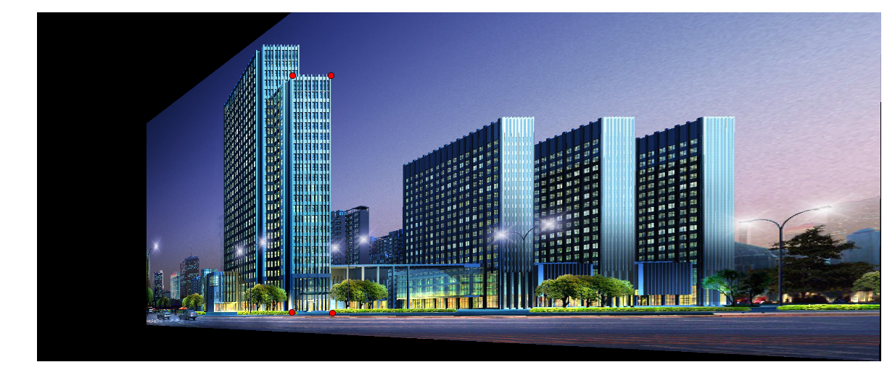 |
| Original image | Rectified image |
|---|---|
| 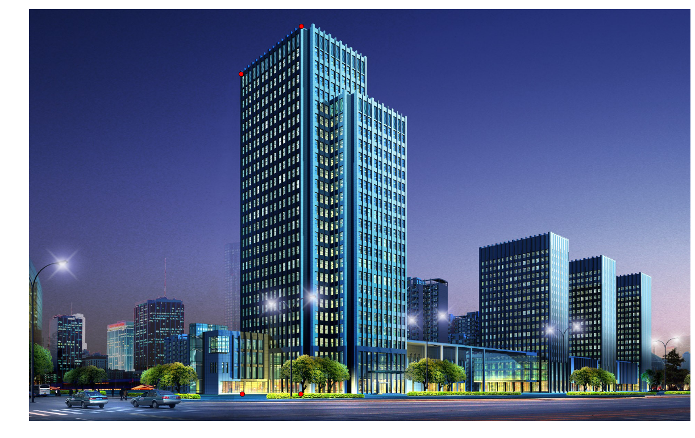 | 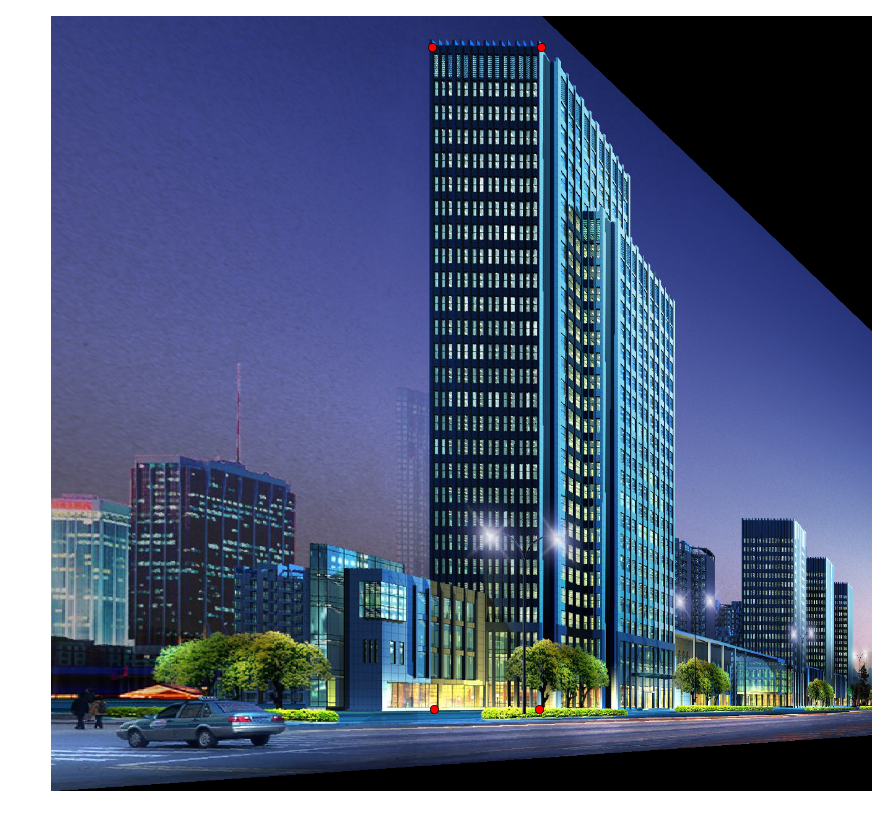 |
| Original image | Rectified image |
|---|---|
| 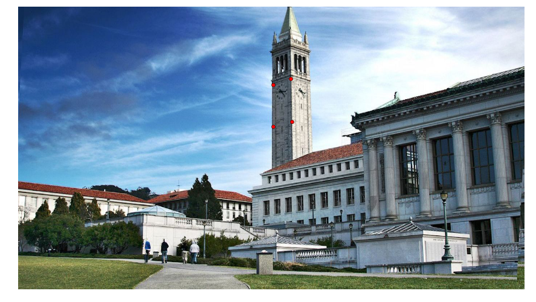 | 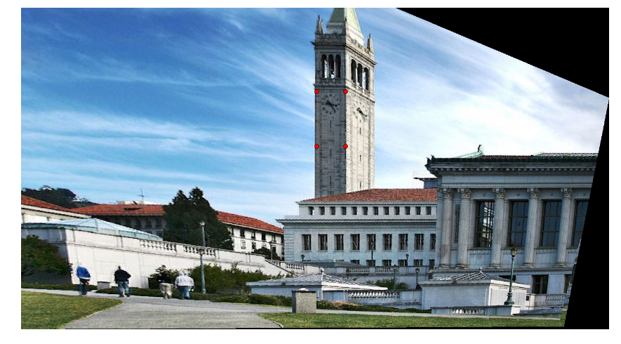 |
Notice that the smart building's perspective warping was much cleaner than the picture of Berkeley. This is because the smart building picture is an artist's conception and is computer drawn so there is no distortion in the image. However, in the perspective warping of Berkeley, there is distortion occuring near the edges of the image. This is likely due to lens distortion around the edges of the original picture, which alters the integrity of the perspective.
Blending Images into a Mosaic
Below are images I blended into a mosaic. I rectify images based on correspondence points in the center image and warp the images to the left and right of the image to those correspondence points. I blend 2 images at a time, blending the left and center image first, then blending that result with the right image.
| 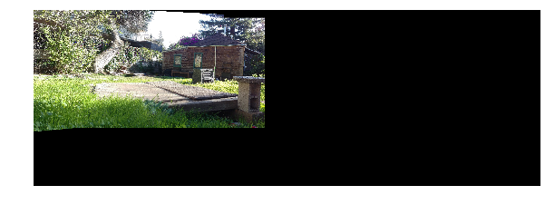 | 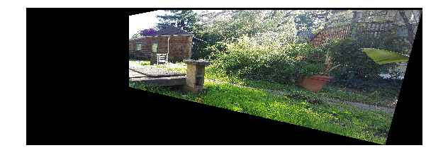 |
|---|
To create a seamless blend, I implement an alpha blending technique by finding the overlap between the two images and defining the pixels in the overlap as im1_pixel*alpha + im2_pixel*(1-alpha), where alpha is in the range 0 to 1 depending on the column of the pixel. This defines the center column of the overlap to have alpha = 0.5 and the left and right edges of the overlap to be either 0 or 1 depending on the side. You can see a difference below:
| Without alpha blending | With alpha blending |
|---|---|
| 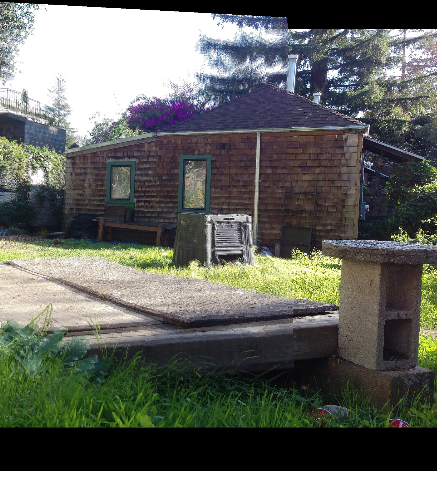 | 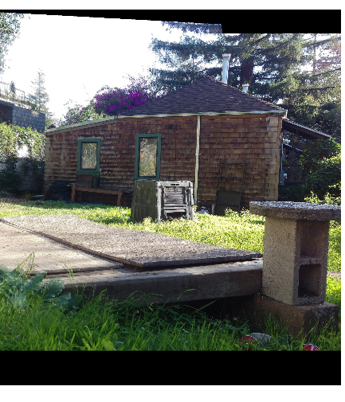 |
Mosaic Results
| Image 1 | Image 2 | Image 3 |
|---|---|---|
| 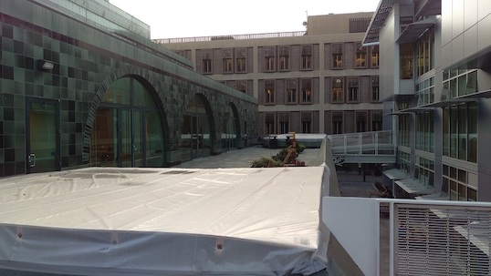 | 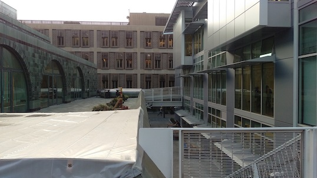 | 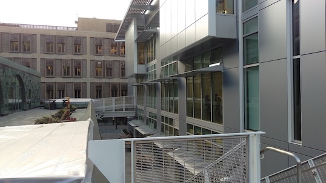 |
Combined Mosaic
Notice the center is a bit blurry because my center of projection was not perfectly aligned between images.
| Image 1 | Image 2 | Image 3 |
|---|---|---|
| 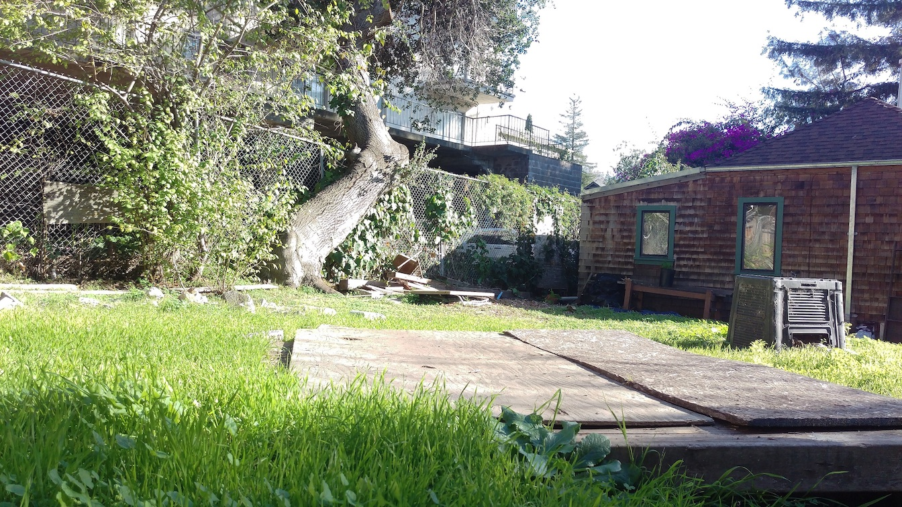 | 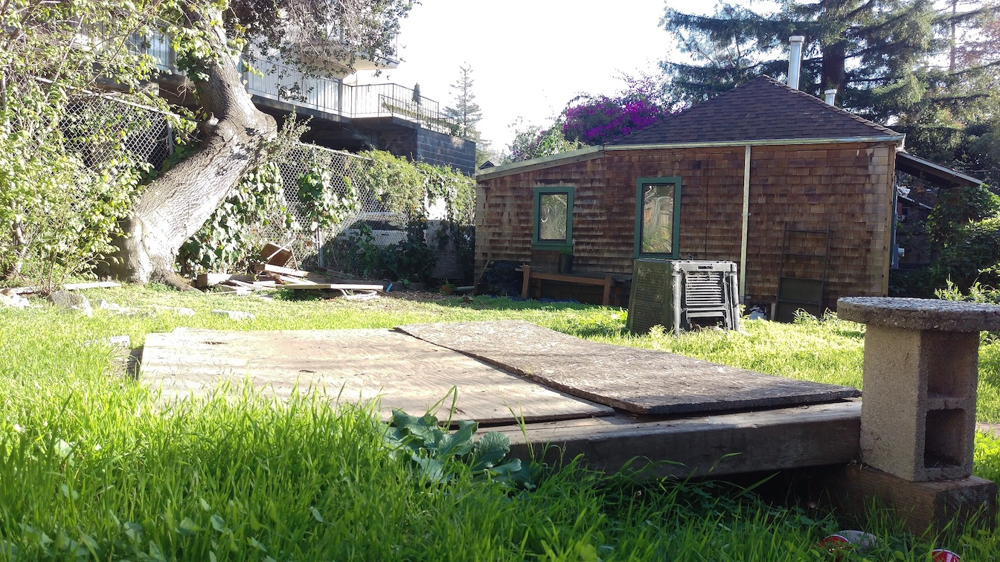 | 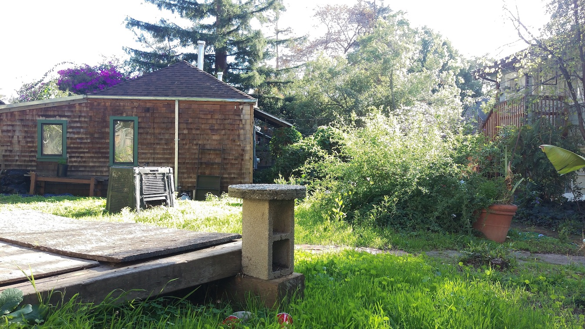 |
| Image 1 | Image 2 | Image 3 |
|---|---|---|
| 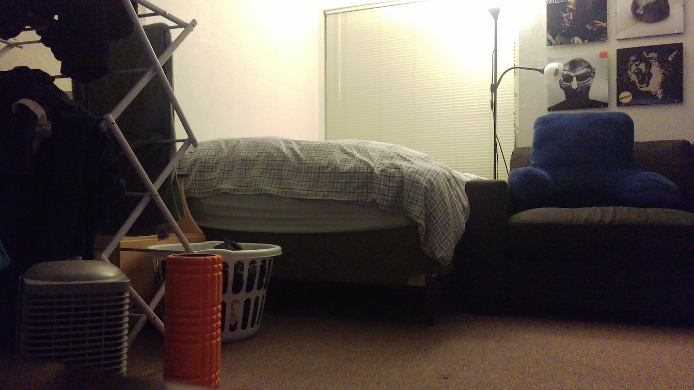 | 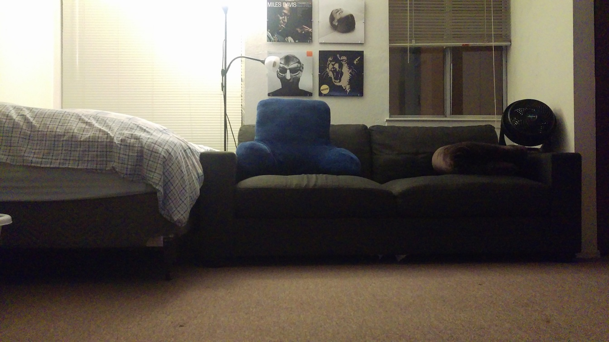 | 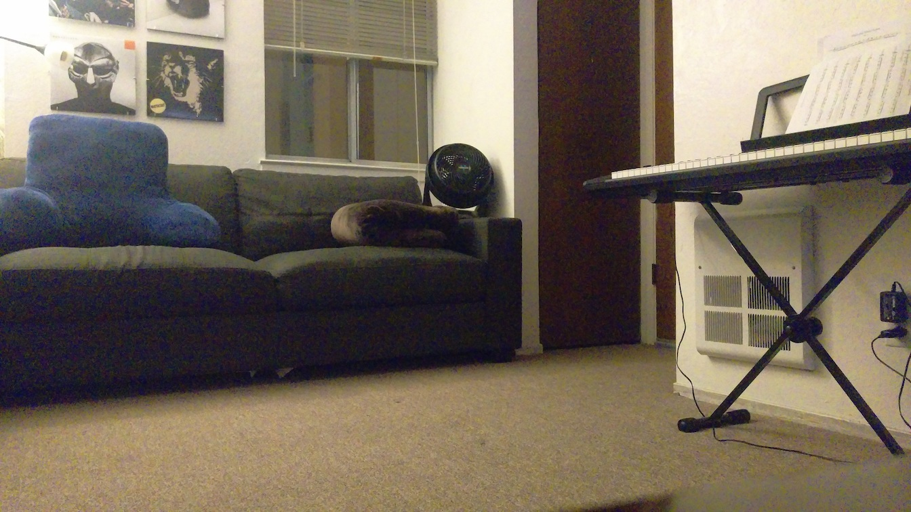 |
Feature Matching for Autostitching
In this second part, we use find feature points in our images to calculate the homography without the need for manual point selection between images. We will follow sections 2-5 from this paper by Brown et al. The paper details finding Harris corners, creating features from the corners, matching features, and finally calculating homography matrices for stitching. Finding all the feature points to create the homography transformation was done on grayscale images. This reduces the number dimensions to work with, but the methods tested below could easily be translated to each color channel R,G, or B. Once points and matrices are calculated, I stitch the color images together!
Detecting Corner Features
Harris Corners
We will use Harris corner features as our first step to extracting important features from the images. Below are all the prominent corners detected with sigma = 2, but as you can tell, we need to filter out the weaker feature points for more a more efficient and effective feature matching algorithm. With so many points (around 20000-30000), our computation time will very high and the potential for redudant and less prominent features are more likley as well.
| Image 1 | Image 2 |
|---|---|
| 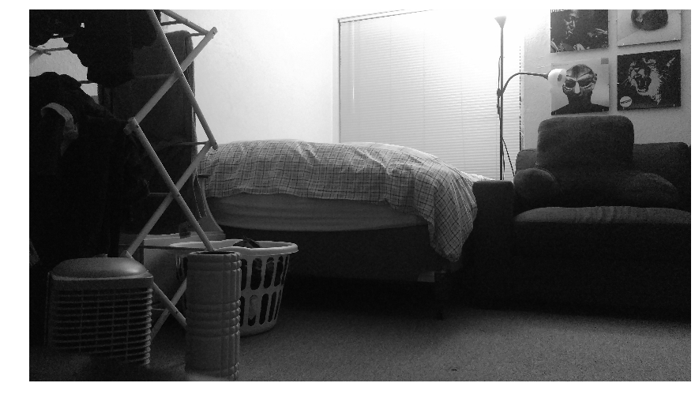 |  |
| Image 1 Harris Corners | Image 2 Harris Corners |
| 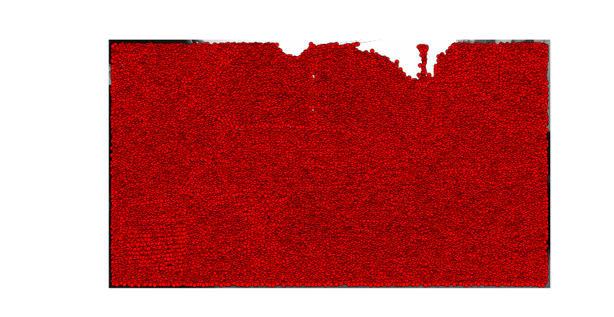 | 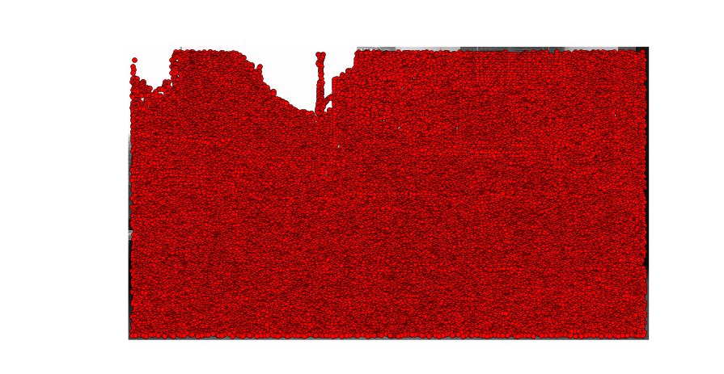 |
Adaptive Non-Maximal Suppression
To filter out the harris corner points, we will use Adaptive Non-Maximal Suppression. ANMS is calculated by finding the largest raidus such that a corner feature is the most prominent (largest eigenvalues) among the points within that raidus. We take the top 500 points with the largest radius, which leaves us with points that most resembles a corner (feature is more distinct) and is (relatively) uniformly distributed. Below are the top 500 anms points for my example images, giving us a workable number of prominent features to work with to start feature matching.
| Image 1 Top 500 ANMS | Image 2 Top 500 ANMS |
|---|---|
| 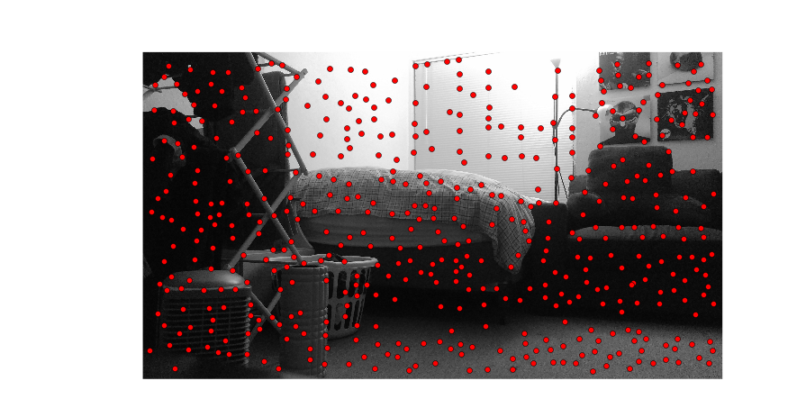 | 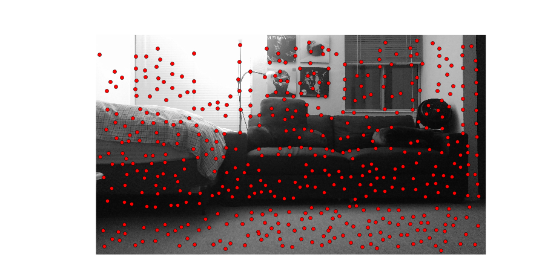 |
Feature Descriptor Extraction/ Matching
For each of the feature point, we want a way to represent the value of that point. One way we can do this is by taking a 40x40 block around the point and downsizing it to an 8x8 image (by Gaussian blurring and sample every 4th pixel). We can then convert this 8x8 matrix into a 1x64 sized vector to represent each feature point.
We can represent each feature point as a 1x64 sized vector by taking a 40x40 block around the point and downsizing it to an 8x8 image (by Gaussian blurring and sampling every 4th pixel). We can then convert this 8x8 matrix into a 1x64 sized vector to represent each feature point. Below is an image of features points and it's corresponding 8x8 feature matrices taken from Professor Efros's CS194-26 class slides:
To match the features, we use the sum of squared difference as our distance metric to match every feature point in image 1 to every feature point in image 2. A naive method would be to take the top percentage of points with the lowest distance metric. However, this creates the potential for incorrectly matching features that are similar but not the same feature point. To prevent this issue, we can use David Lowe's nearest neighbor ratio test, which is 1NN/2NN. The lower the value, the more likely the first nearest neighbor is an accurate/unique matching feature. This reduces the chance of matching different features that are similar in the image. Below are results for images of my apartment room (18 matched features).
| Image 1 Matched Features | Image 2 Matched Features |
|---|---|
| 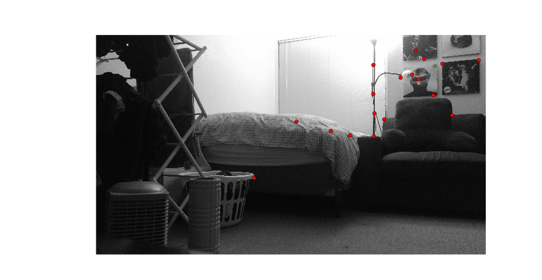 | 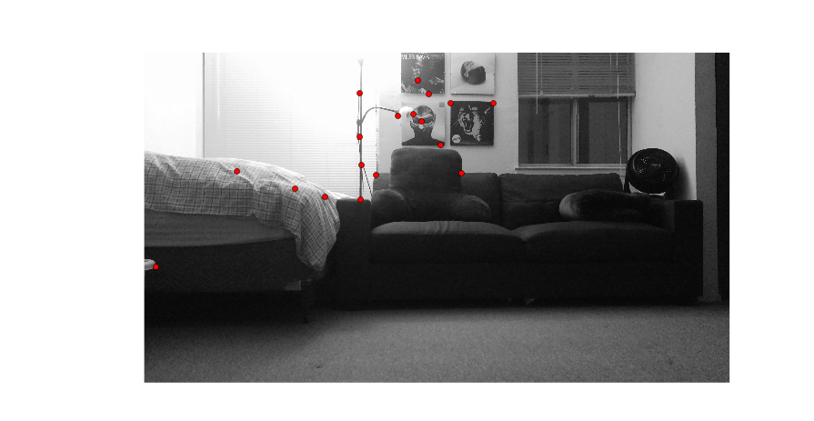 |
RANSAC
We use Random Sample Consensus (RANSAC) to determine the best transformation that includes the most number of matched features (inliers) from the previous step. Inliers are determined by taking the sum of squared differences between features and checking if they are less than some epsilon (e = 10 in my code). The pseudocode for RANSAC is below (taken from Professor Efros's CS194-26 slides):
Running RANSAC on the matched features above, I am able to find 4 points below that sets all 18 matched points as inliers!
| RANSAC on Image 1 | RANSAC on Image 2 |
|---|---|
| 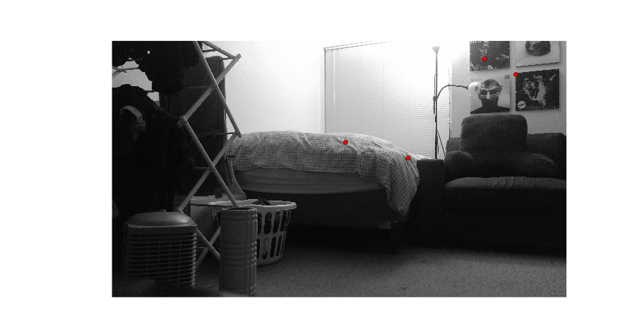 | 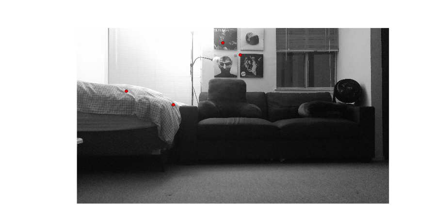 |
With accurate points for creating a homography matrix, I can now use the warping functions from the previous part to get the correct perspective warp by taking the least squares of all the inlier points:
Here is the stitched image in color:
Auto Stitching Results (with comparisons to part 1)
Soda
Manual Alignment Mosaic
Notice the center is a bit blurry because my center of projection was not perfectly aligned between images and my chosen correspondence points were not perfect.
Auto Alignment Mosaic
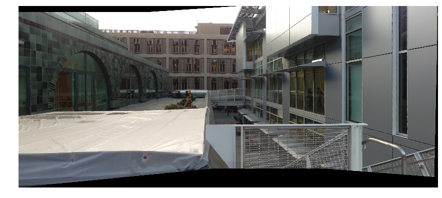The automatically detected features chooses the best points to minimize error. As you can see in the center of the image, we no longer have as much ghosting as we did in the previous manually aligned image!
House
Manual Alignment Mosaic
The manual alignment here seems pretty good
Auto Alignment Mosaic
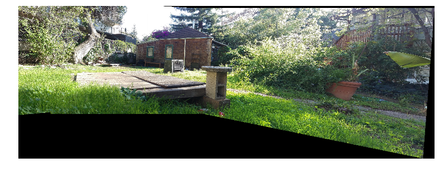The automatically detected features looks just as good as the manually assigned features
Apartment Room
Manual Alignment Mosaic
You can notice some error in the alignment near the top of the images.
Auto Alignment Mosaic
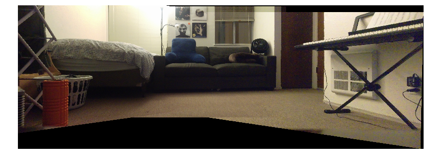Notice that the top of the images are almost perfectly (if not perfectly) aligned! The automatic stitching clearly wins here.
Bells and Whistles
Panorama Recognition
Given a set of images, panorama recognition is used to recognize which images can be stitched together to make a panorama image. I realized this technique is implemented by google photos as google automatically gave me panorama images for the images I took for this project. My implementation of panorama recognition uses pairwise comparisons between photos to determine the best pair of images to be stitched together. The best metric for determining if two images are of the same scene is simply the number of matching features.
I originally set out combining the number of matching features and the number of inliers given the best homography matrix as two metrics for image similarity. However, I found calculating the best homography matrix between an image and all other images was quite a bit of extra computation. After some testing, simply using the number of matching features was enough to give me very accurate results (granted my image set was quite small). After finding which groups each image belonged in, the second step is determining the ordering of images. I did this by comparing the average of the feature points in the x-axis and images with the largest x-axis average would be the most left in the ordering (and vice versa). Below are the automatically recognized panoramas after feeding in a list of images in the listed order (from left to right)!
Things Learned
From part 1: The big assumption we are making with blending images together into a mosaic is that the center of projection is the same for all the images. With my phone, which doesn't have square edges, it was particularly hard to rotate the camera and maintain the same center of projection (moving the aperature location or tilting my phone up/down will shift the center of projection). This results in one set of images not turning out great, but the other images were properly taken.
The coolest thing I learned to do in this project is how to implement an automatic feature detection/ matching algorithm. We can see that most of the mosaics created automatically were better aligned than the manually selected feature points.